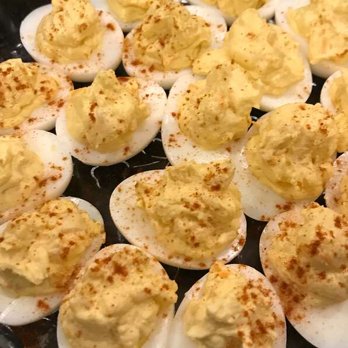

Deviled Eggs

Description
If you're looking for a crowd-pleasing appetizer, look no further!
Deviled Eggs are a fan favorite and are sure to make mouths water.
Scroll down to find a quick and easy deviled egg recipe.
Ingredients
- 12 eggs
- 1 teaspoon vegetable oil
- 1 small onion chopped
- 1/4 cup sour cream
- 2 tbsp mayo
- ` tbsp ranch dressing
- 1.5 tsp Dijon mustard
- 1.5 tsp garlig powder
- 1.5 pinch onion powder
- 1/8 tsp lemon pepper seasoning
- 1 tbsp bacon bits
- 1 cup finely shredded sharp cheddar cheese
- 1/4 teaspoon paprika
Steps
- Place eggs into a large pot and cover with lightly salted water. Bring to a boil and reduce heat to medium; boil eggs for 10 to 12 minutes. Drain the boiling water and fill pot with cold water. After 2 to 3 minutes, pour off water and replace with more cold water. Repeat until eggs are fully chilled, 10 to 15 minutes. Peel eggs.
- Heat vegetable oil in a small skillet over medium heat and cook and stir onion until translucent, about 5 minutes. Remove from heat and let cool.
- Slice eggs in half lengthwise and scoop yolks into a bowl; transfer egg white halves to a plate. Mash egg yolks with a fork; stir in sour cream, mayonnaise, ranch dressing, Dijon mustard, garlic powder, onion powder, and lemon pepper seasoning until yolk mixture is smooth. Stir in sauteed onions, bacon bits and Cheddar cheese.
- Generously fill egg halves with filling and sprinkle each deviled egg with paprika. Refrigerate until chilled before serving.